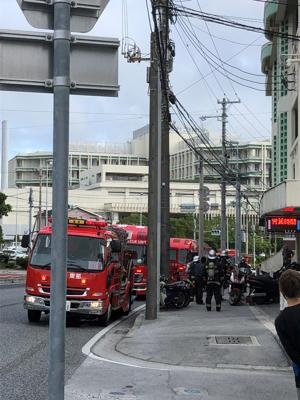
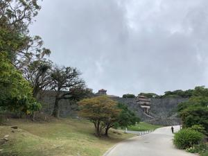
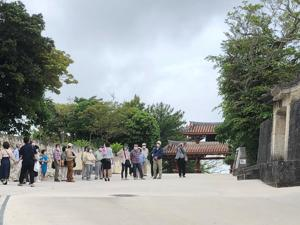
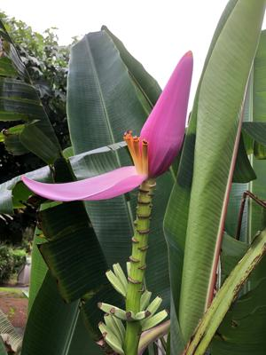

うるがいの話 ある日
最新: 一か月点検【うるがいの話 ある日】とは 一日だけのプログです
『うるがいの話』の最新一日だけのプログで、通信料が少なく経済的だ。カニの画像をクリックすると全ての日付が載る『うるがいの話』サイトを表示します
|
|
【うるがいの話】 うるがい(ｳﾙｶﾞｲ urugai)とは、『もずくがに』の名前でとても大きくなります。 |
|---|---|
|
|
【カミマヤーの話】 猫のことを方言でマヤーといいます。カミマヤー（kamimayaa）とは、神の猫のことです。 |
|
【たながぁの音楽】 たながぁ（ﾀﾅｶﾞｰtanagaa）とは手長えびのことで、何種類かあり大きいのは車 エビぐらいになります。 |

|
【ぶながぁの話】 ぶながー(bunagaa)とは、赤い髪の毛、赤い身体、そして身長は１ｍ２０ｃｍ ぐらい、川の蟹を食べているの目撃された。場所は沖縄県国頭郡大宜味村のと ある村僕の隣近所に住んでいる爺さんから、聞いた話です。 |
|
|
【ギーマの話】 ギーマ(giima)とは、山原の里山に咲くスズランに似た、 花を付けます。実は食べられます、 気が付くと口の周りが紫になっています。 |
2022年04月22日 (金）一か月点検
16:08
   
きのう、明日は無料の一か月点検がありますとトヨタの営業所から連絡があっ
た。ん、聞いていないが、マいいか。後部座席に左ドアの締めの具合が、イマ
イチ、半ドアなのか分からない閉まり方がする。その旨を整備の責任者に言う
が、窓枠のゴムとの調整でこのようになっているとの事だが、明確な不備では
ないのでメンテナンスは行わないとのこと。フーン、多分そうだろうな。早い
もので早一か月である。久々に首里城公園コースへのジョギングをする。途中
消防車のサイレンが沢山聞こえてくる、そして私の走っている手前で車が止ま
る、ボンベを装備した消防隊が車から降り、私の行くてを防ぐ。オロオロ、ど
うしたんだろうと煙がないか見渡す、隊員は近くにある床屋から驚いて道に出
て来た人達に『火事があると聞いていませんか？』とか聞いている。バイクの
店にも・・・・、そのうち消防車は６台になっていた。でも、なんでもなかっ
たようで、引き上げていく消防車も出て来たので、ジョギングを妨害された私
もランを再開した。首里城に着くと観光客の団体が居た、コロナ禍になって久
々に見かける。そういえば、識名園の駐車場にも大型の観光バスが３台止まっ
ていた。コドモは今日、飛行機に乗る予定だったが、コロナが収まらないので
延期した。第７波はいつ収まらなるだろう、前の職場でも陽性者がでたと知っ
た、現役は大変だ。暑い！
１６時０３分 ビットコインの総資産 ￥１５、０７６↓